<!doctype html>
<html lang="ja"><head><meta charset="utf-8">
<meta name="viewport" content="width=device-width,initial-scale=1">
<title>レース競技における安全ベルトに関する細則_20250101</title>
<style>
:root{--fg:#111827;--muted:#6b7280;--line:#e5e7eb;--accent:#1d4ed8;--bg:#fff}
@media (prefers-color-scheme:dark){:root{--fg:#e5e7eb;--muted:#9ca3af;--line:#374151;--accent:#93c5fd;--bg:#0f172a}}
body{margin:0;background:var(--bg);color:var(--fg);font-family:"Noto Sans JP",system-ui,sans-serif;line-height:1.9}
.doc{max-width:46rem;margin:0 auto;padding:2rem 1.25rem 6rem}
h1{font-size:1.6rem;line-height:1.5;margin:0 0 .25rem}
.meta{color:var(--muted);font-size:.8rem;margin-bottom:2rem}
h2,h3,h4,h5{line-height:1.6;margin:2.2em 0 .6em;scroll-margin-top:4rem}
h2{font-size:1.25rem;border-left:4px solid var(--accent);padding-left:.6rem}
h3{font-size:1.1rem}
h4{font-size:1rem;color:var(--accent)}
p{margin:0 0 1em;text-align:justify}
figure{margin:1.8em 0;padding:.75rem;border:1px solid var(--line);border-radius:.5rem}
figure img{display:block;width:100%;height:auto}
figcaption{margin-top:.5rem;font-size:.85rem;color:var(--muted);text-align:center}
.tablewrap{overflow-x:auto;margin:1.5em 0}
table{border-collapse:collapse;font-size:.9rem;min-width:100%}
th,td{border:1px solid var(--line);padding:.35em .6em;vertical-align:top}
.pagemark{float:right;font-size:.7rem;color:var(--muted);user-select:none}
nav.toc{border:1px solid var(--line);border-radius:.5rem;padding:1rem 1.25rem;margin-bottom:2.5rem;font-size:.9rem}
nav.toc ol{list-style:none;margin:0;padding:0}
nav.toc a{color:inherit;text-decoration:none}
nav.toc a:hover{color:var(--accent);text-decoration:underline}
nav.toc .l1{padding-left:0;font-weight:700}
nav.toc .l2{padding-left:1rem}
nav.toc .l3{padding-left:2rem}
nav.toc .l4{padding-left:3rem;color:var(--muted)}
.warn{background:#fef3c7;color:#78350f;border-radius:.4rem;padding:.6rem .9rem;font-size:.85rem;margin-bottom:1.5rem}
</style>
</head><body><article class="doc">
<h1>レース競技における安全ベルトに関する細則_20250101</h1>
<p class="meta">2026年 JAF国内競技車両規則 ／ 第5編 細則 ／ アップロード日 2024-11-25 ／ 9ページ ／ <a href="https://motorsports.jaf.or.jp/-/media/1/3375/3379/3400/3462/3464/3485/2025_jaf_05_saisoku_safety_belts_race_20250101.pdf" rel="nofollow">JAF 原本 PDF</a></p>
<nav class="toc"><ol>
<li class="l3"><a href="#レース競技における安全ベルトに関する細則">レース競技における安全ベルトに関する細則</a></li>
<li class="l4"><a href="#シートベルトの形式">２．シートベルトの形式</a></li>
<li class="l4"><a href="#装備-装着">３．装備、装着</a></li>
<li class="l4"><a href="#車体への取り付け">４．車体への取り付け</a></li>
<li class="l4"><a href="#1-脚部ストラップ-ベルト">1．脚部ストラップ（ベルト）</a></li>
<li class="l4"><a href="#2-取り付け金具">2．取り付け金具</a></li>
<li class="l4"><a href="#3-タングプレート">3．タングプレート</a></li>
<li class="l4"><a href="#維持-管理と寿命">５．維持、管理と寿命</a></li>
</ol></nav>
<h4 id="レース競技における安全ベルトに関する細則"><span class="pagemark" id="p1">P.1</span>レース競技における安全ベルトに関する細則</h4>
<p>１．シートベルト（Seat belt、Safety harnesses）</p>
<p>衝突時に、乗員を保護するのが最大の目的であり、モータースポーツの安全性をより高めるため装備、装着が義務付けられる。競技参加者は、自らを保護するという意識を高めこれらの効果的な装備、装着の重要性を認識する必要がある。</p>
<figure>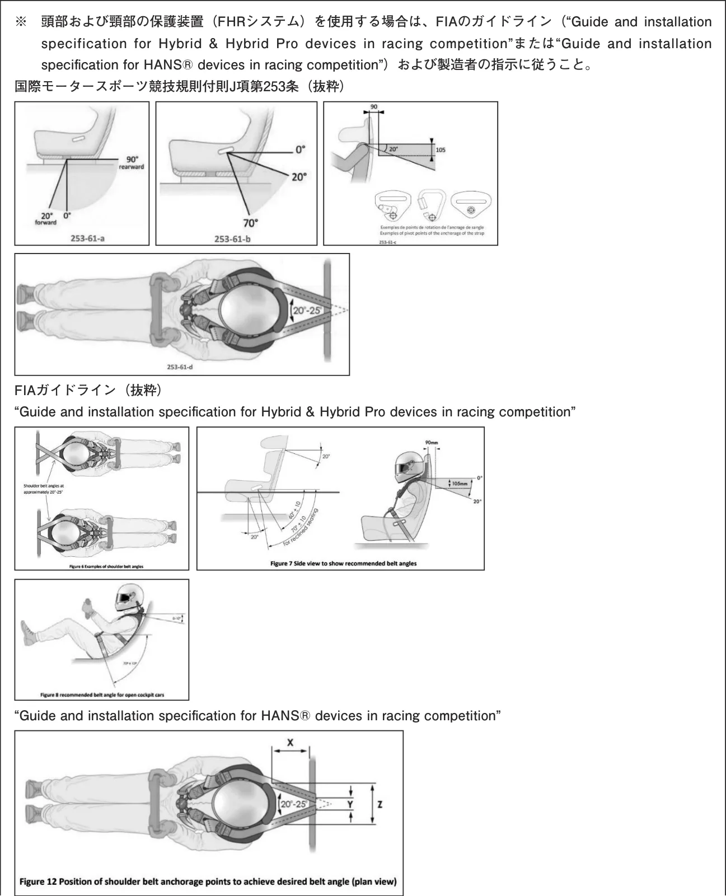</figure>
<figure><span class="pagemark" id="p2">P.2</span>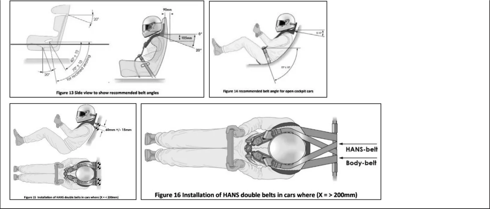</figure>
<h5 id="シートベルトの形式">２．シートベルトの形式</h5>
<p>１）少なくとも２本の腰部ストラップと２本の肩部ストラップおよび１本の脚部ストラップからなるフルハーネス式（Full harness seat belt）（図１参照）</p>
<p>２）車体への取り付け点</p>
<p>（１）腰部ストラップ；２点</p>
<p>（２）肩部ストラップ；２点</p>
<p>（３）脚部ストラップ；１点、２点</p>
<p>３）Ｙタイプ肩部ストラップ（図２参照）：</p>
<p>２本の肩部ストラップを持つが、途中で１本になりそのまま車体へ取り付けられるベルト、いわゆる「Ｙ字レイアウト」の肩部ストラップの使用は禁止される。</p>
<h5 id="装備-装着">３．装備、装着</h5>
<p>１）フルハーネス式の５点式以上を装備し、競技中は常に装着すること。（図１参照）</p>
<p>２０１５年１月１日以降に公認または登録された車両については、フルハーネス式の５点式以上を装備することが義務付けられる。</p>
<p>２）次の何れかの要件を満たしたターンバックル・リリースシステム（Turnbuckle release system）を装備すること。（図３参照）</p>
<p>（１）FIA基準8854/98および8853-2016に合致した機能を有するもの。</p>
<p>機能：レバーを左右どちらの方向へ回してもタングプレートをリリースするもの。</p>
<p>FIA基準8854/98の使用は２０２４年までとする。</p>
<p>（２）カムロック式（図３「５点式（例）」参照）</p>
<p>機能：カムレバーを上下に操作することによりタングプレートを固定／リリースするもの。</p>
<p>（３）ラッチ／レバー式（図３「６点式（例）」参照）</p>
<p>機能：腰部ストラップに平行な面に回転軸を持つレバーを操作することによりドライバーの身体を拘束しているストラップを開放するもの。</p>
<p>（４）その他の基準/規格に合致したもの、あるいは機能を有するものについては、JAFに問い合わせること。</p>
<p>３）幅７５ｍｍ以上を有する肩部ストラップの装備・装着が義務付けられる。</p>
<p>ただし、FIAテクニカルリストNo.29に合致したヘッドアンドネックサポートを使用し、それに指定されたベルト（図１１参照）を使用する場合を除く。</p>
<h5 id="車体への取り付け">４．車体への取り付け</h5>
<p>１）取り付け位置（Anchor point）</p>
<p>（１）シートベルトの性能、乗員拘束の効果等その有効性を確保するために、図４に示す範囲内に装備すること。</p>
<p>（２）前後位置調整装置を有するシートの場合は、そのどの位置に調整されても、範囲内に収まるように取り付け位置</p>
<p><span class="pagemark" id="p3">P.3</span>を選定すること。</p>
<p>①腰部ストラップ（Lap strap）の「車体側取り付け位置：取り付け角度と取り付け幅」は、「衝突時のサブマリン現象」の発生の防止に関係する。</p>
<p>②肩部ストラップ（Shoulder strap）の「車体側取り付け位置：取り付け角度と取り付け幅」は、衝突時のエネルギー吸収性能に関係する。</p>
<p>（３）図４の範囲内に装備、装着が可能であるならば、自動車製造者により設置された「シートベルト取り付け位置」、「取り付け孔」、「取り付けボルト」等を変更せずに使用することを推奨する。</p>
<p>（４）自動車製造者により設置された「シート」が変更されていなければ、シートの前後位置を調整しても、図４の取り付け範囲内に収まる。</p>
<p>２）肩部ストラップのレイアウト（図５参照）</p>
<p>肩部ストラップは胸部拘束の確実性に有利な「クロス」レイアウトを推奨する。</p>
<p>３）車体側取り付け構造（図６、図７、図８参照）</p>
<p>自動車製造者が設置した「取り付け部（取り付けネジ部）：Anchor」を使用しないで新たに設置する場合は以下によること。</p>
<p>（１）構造</p>
<p>①取り付けボルトは、ベルト張力が「せん断」で作用する構造で使用することが望ましい。</p>
<p>②自動車製造者あるいはシートベルト製造者により他の構造が提供された場合はそれに従うこと。</p>
<p>③肩部ストラップの車体への取り付け点をロールケージとする場合は、国際モータースポーツ競技規則付則J項第253条6.2）に従うこと。</p>
<p>（２）強度</p>
<p>①自動車製造者により設置された取り付け構造と同等以上の強度を有すること。</p>
<p>②以下を目標とする。</p>
<p>・腰部ストラップ取り付け部：静的引張荷重1,470daNの負荷に耐えること。</p>
<p>・肩部ストラップ取り付け部：静的引張荷重1,470daNの負荷に耐えること。</p>
<p>・脚部ストラップ取り付け部：静的引張荷重720daNの負荷に耐えること。</p>
<p>③取り付け金具、ボルト、ナット、ワッシャー、補強プレート等で構成され、自動車製造者により設置された取り付け構造例に倣って取り付ければ、目標強度は満足できる。</p>
<p>④２本のストラップに対し１個の取付け点である場合（肩部ストラップについては禁止）は、考慮される負荷は、要求される負荷の総計に等しくなければならない</p>
<p>⑤取り付け具のボルト、ナットは以下とする。（JIS B0208参照）</p>
<div class="tablewrap"><table><tr><td>材料</td><td>ネジ呼び名</td><td>ナット有効ネジ高さ</td></tr><tr><td>S38C〜S45Cまたは同等</td><td>7/16-20UNF-2A/2B</td><td>１０ｍｍ以上</td></tr></table></div>
<p>⑥取り付け部はいかなる場合も「２ｍｍ」以上動いてはならない。</p>
<p>４）補強板</p>
<p>（１）新たに設置される取り付け点は、以下の補強板により補強すること。（図９参照）</p>
<p>（２）補強板断面は、設置する場所の車体板形状に一致させること。</p>
<div class="tablewrap"><table><tr><td>材質</td><td>板厚</td><td>大きさ（有効面積）</td><td>車体への固定</td></tr><tr><td>SPHCまたは同等</td><td>ｔ＝3.0mm以上</td><td>40cm2以上</td><td>溶接</td></tr></table></div>
<p>５）改造、加工の禁止</p>
<p>自動車製造者、あるいはシートベルト製造者によりシートベルトに当初から組み込まれ、あるいは構成されている以下の部品は一切改造、加工してはならない。</p>
<p>（１）ストラップ（Strap）（５）ボルト（Bolt）</p>
<p>（２）バックル（Buckle）（６）ワッシャー（Washer）</p>
<p>（３）タング（Tongue）（７）その他構成部品</p>
<p>（４）取り付け具（Anchor plate）</p>
<p>６）FIA国際モータースポーツ競技規則付則J項第253条に定められた取り付け方法も許される。</p>
<p><span class="pagemark" id="p4">P.4</span>フルハーネス式シートベルト（Full harness seat belt）（図１）</p>
<h5 id="1-脚部ストラップ-ベルト">1．脚部ストラップ（ベルト）</h5>
<figure>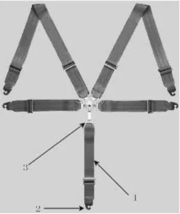</figure>
<p>（ウエビング）</p>
<h5 id="2-取り付け金具">2．取り付け金具</h5>
<h5 id="3-タングプレート">3．タングプレート</h5>
<p>Ｙタイプの肩部ストラップ（図２）</p>
<figure>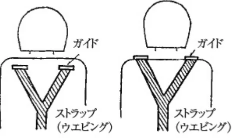</figure>
<p>※使用は禁止される。</p>
<p>ターンバックル・リリースシステム（図３）</p>
<figure>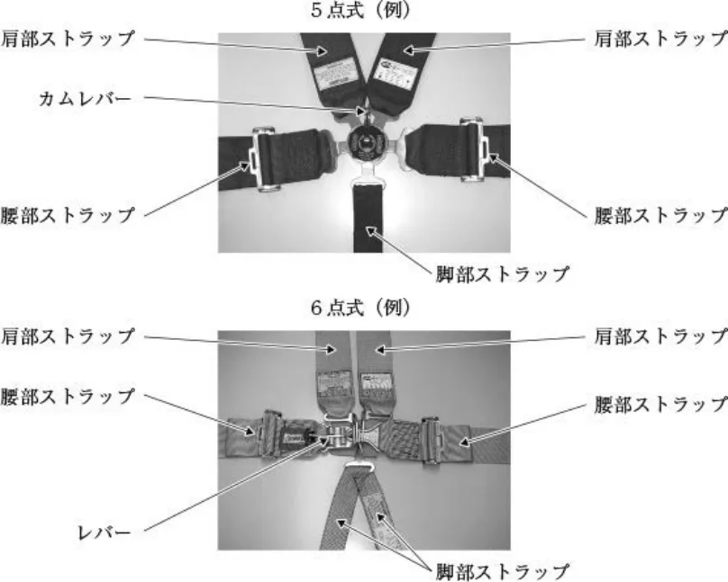</figure>
<p><span class="pagemark" id="p5">P.5</span>車体側の取り付け位置（図４）</p>
<figure>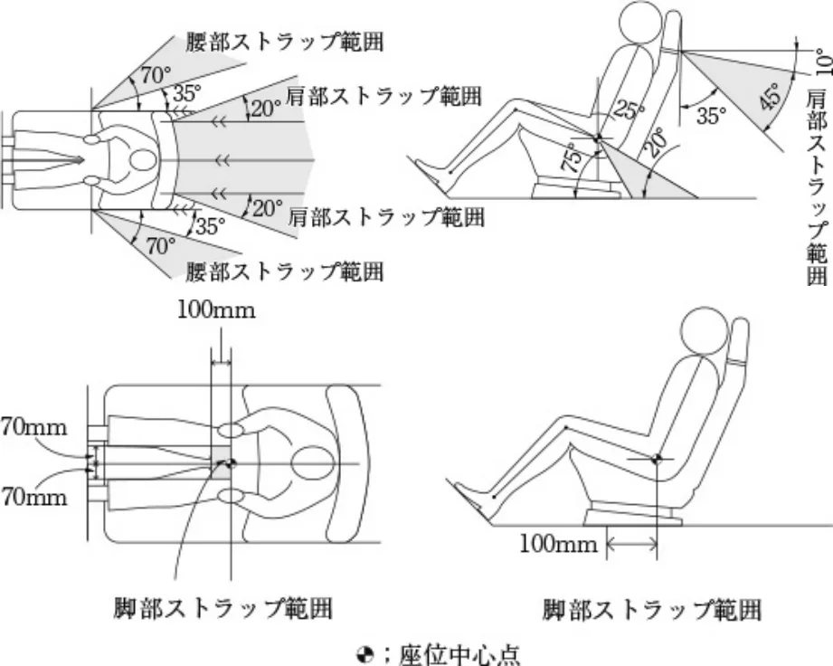</figure>
<p>肩部ストラップのレイアウト（図５）</p>
<figure>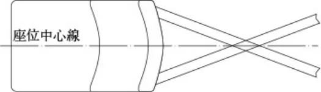</figure>
<p>全般的な取り付け方法（図６）</p>
<figure>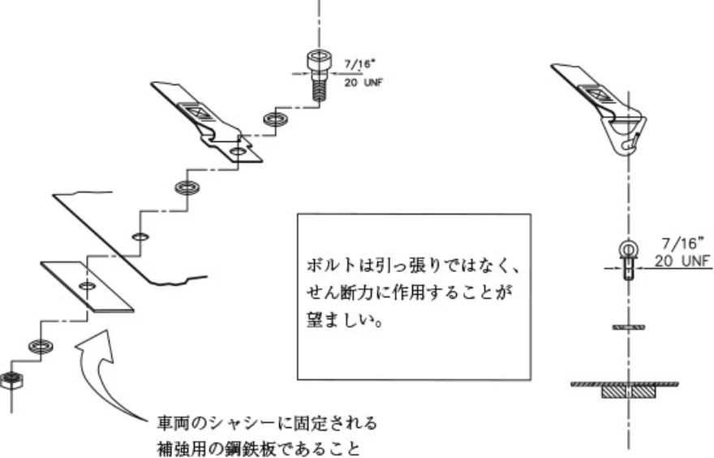</figure>
<p>肩部ストラップの取り付け方法（図７）</p>
<figure>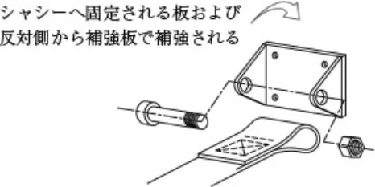</figure>
<p><span class="pagemark" id="p6">P.6</span>脚部ストラップの取り付け方法（図８）</p>
<figure>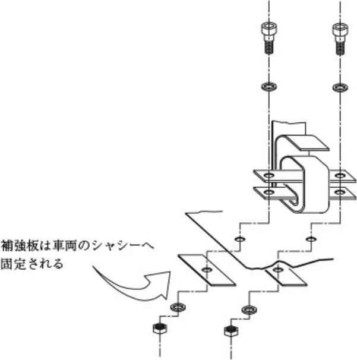</figure>
<p>車体側の補強板（図９）</p>
<figure>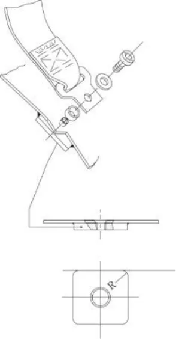</figure>
<h5 id="維持-管理と寿命">５．維持、管理と寿命</h5>
<p>１）ストラップは使用頻度、あるいは化学薬品や太陽光線により劣化するので、常にその状況を点検、確認すること。</p>
<p>２）一部が切断したり、擦り切れたストラップは交換すること。</p>
<p>３）ストラップにベンジンや、ガソリン等の有機溶剤を付着、浸透させてはならない。</p>
<p>付着、浸透させた場合は性能が落ち、十分な効果を発揮できなくなる恐れがあるので、交換すること。</p>
<p>４）バックル、タング等の金属部品に曲がり、変形、錆、作動不良等の劣化が認められた場合は、交換すること。</p>
<p>５）万一事故により、シートベルトに強い衝撃を受けた場合、ストラップ、構成部品等の外観に異常がなくても再使用してはならない。</p>
<p>６）ラベルに表示されている有効期限を越えて使用してはならない。</p>
<p><span class="pagemark" id="p7">P.7</span>ラベル表示例（FIA基準8853/98、8854/98、8853-2016）（図１０）</p>
<p>FIA基準8853/98、8854/98：</p>
<figure>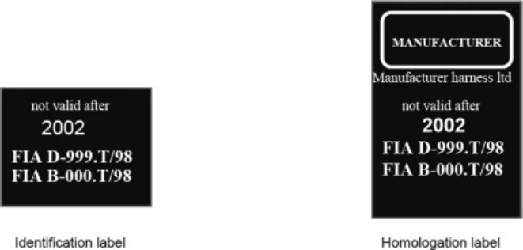</figure>
<p>（2012年12月31日まで）</p>
<figure>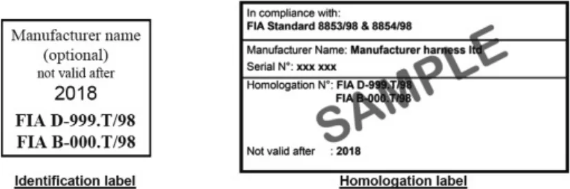</figure>
<p>（2013年1月1日から）</p>
<p>FIA基準8853/2016：</p>
<figure></figure>
<p><span class="pagemark" id="p8">P.8</span>ＦＨＲシステム用として指定されたベルトのラベル表示例（図１１）</p>
<p>FIA基準8853/98、8854/98：</p>
<figure>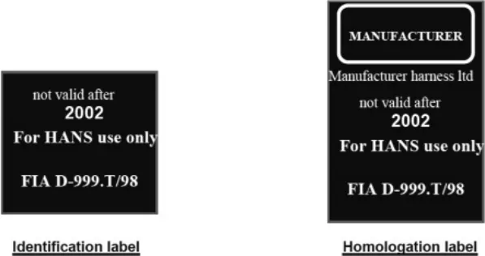</figure>
<p>（2012年12月31日まで）</p>
<figure>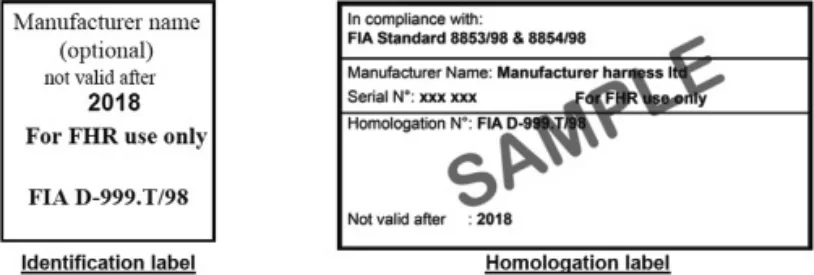</figure>
<p>（2013年1月1日から）</p>
<p>FIA基準8853/2016：</p>
<figure>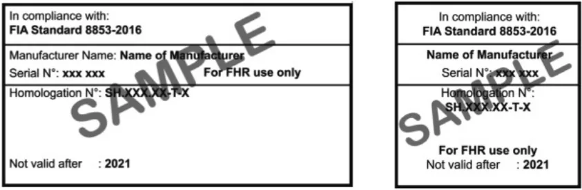</figure>
<p>（ショルダーベルトのラベル）　　　　　　　（公認ラベル）</p>
<p><span class="pagemark" id="p9">P.9</span>参考：FIA基準8853/98または8854/98に従ってFIAに公認された日本製安全ベルトの一覧 （2024年10月現在）</p>
<div class="tablewrap"><table><tr><td>FIA公認番号</td><td>製品名</td><td>製造者名</td><td>適用基準</td><td>車体への取付点数</td></tr><tr><td>B-146.T/98</td><td>TK-MPH-340</td><td>タカタ㈱</td><td>8854/98</td><td>４</td></tr><tr><td>B-214.T/98</td><td>TK-MPH-341</td><td>〃</td><td>8854/98</td><td>4</td></tr><tr><td>D-284.T/98</td><td>RACE 4</td><td>〃</td><td>8854/98</td><td>4</td></tr><tr><td>B-298.T/98</td><td>HPI-500</td><td>㈱エイチ・ピー・アイ</td><td>8854/98</td><td>４</td></tr><tr><td>B-323.T/98</td><td>OOB-CRH-4</td><td>㈱キャロッセ</td><td>8854/98</td><td>４</td></tr><tr><td>B-346.T/98</td><td>HPRH-4900</td><td>㈱エイチ・ピー・アイ</td><td>8854/98</td><td>４</td></tr><tr><td>B-350.T/98</td><td>HPI-DRH23-AK100</td><td>〃</td><td>8854/98</td><td>４</td></tr></table></div>
<p>参考：FIA基準8853-2016に従ってFIAに公認された日本製安全ベルトの一覧 （2024年10月現在）</p>
<div class="tablewrap"><table><tr><td>FIA公認番号</td><td>製品名</td><td>製造者名</td><td>適用基準</td><td>車体への取付点数</td></tr><tr><td>SH.098.23-T-6</td><td>HPI-FRH23-HK003</td><td>〃</td><td>8853-2016</td><td>6</td></tr></table></div>
</article></body></html>